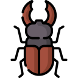

Živočichové a rostliny CHKO Bílé Karpaty
Vyberte si kartu a poznejte druhy, které žijí a rostou v Chráněné krajinné oblasti Bílé Karpaty.
Savci
Vlk obecný
Canis lupus
Otevřít kartu 🐈Kočka divoká
Felis silvestris
Otevřít kartu 🦦Vydra říční
Lutra lutra
Otevřít kartuPtáci
Obojživelníci
Hmyz
Modrásek bahenní
Phengaris nausithous
Otevřít kartu
Roháč obecný
Lucanus cervus
Otevřít kartuTesařík alpský
Rosalia alpina
Otevřít kartuRostliny
Karty do výuky ke stažení
Karty zvířat a rostlin si můžete stáhnout, vytisknout na papír A3, vystřihnout podle obrysu a volně je používat při výuce, školních aktivitách i aktivitách v přírodě.
Stáhnout zde
Na každé kartě je QR kód. Po naskenování mobilem nebo tabletem se otevře odpovídající digitální karta druhu na tomto webu – stejné karty najdete výše na této stránce.
Jak na to?
- 1StáhněteVyberte karty a stáhněte PDF soubory z nabídky výše.
- 2Vytiskněte na A3Barevně, ve skutečné velikosti (100 %), aby QR kódy zůstaly dobře čitelné.
- 3Vystřihněte podle obrysuStříhejte podél přerušované čáry, kterou označují nůžky.
- 4Používejte karty při výuce a aktivitáchVe třídě, na chodbě, na školní zahradě i v terénu.
- 5Skenujte QR kódy pro digitální obsahFotoaparát mobilu nebo tabletu otevře kartu druhu na webu.
💡 Tip pro učitele
Karty můžete volně využít při nejrůznějších aktivitách – jako poznávačku druhů, stopovací hru v okolí školy, skupinovou práci, nástěnku nebo podklad pro projektový den. Děti mohou karty rozmístit po třídě či venku a pomocí QR kódů o každém druhu zjistit víc.
Vytiskněte. Vystřihněte. Naskenujte. Objevujte.